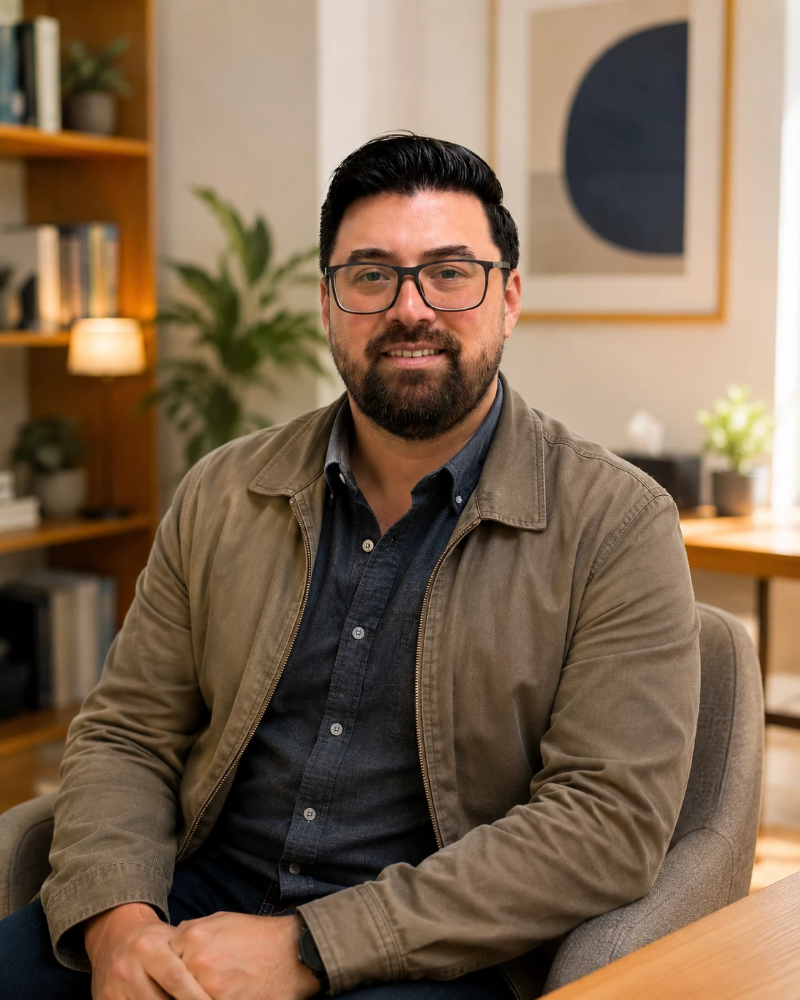

Tu día perdió estructura
Cuesta comenzar, organizar horarios, sostener hábitos o terminar lo que te propones.
Terapia Ocupacional · Salud mental
Acompaño a adolescentes y personas adultas cuando la ansiedad, el ánimo, el agotamiento o una crisis comienzan a afectar las rutinas, el estudio, el trabajo, los vínculos y la autonomía.
Cuando la vida cotidiana empieza a costar
La consulta puede ser útil cuando existe una distancia entre lo que necesitas o deseas hacer y lo que actualmente logras sostener. No necesitas llegar con un diagnóstico claro ni con una explicación perfecta de lo que ocurre.
Podemos comenzar observando qué se ha vuelto difícil y cómo está afectando tu día a día.
Cuesta comenzar, organizar horarios, sostener hábitos o terminar lo que te propones.
Aparecen bloqueo, agotamiento, ausencias, desorganización o temor de retomar.
Intereses, vínculos y espacios que antes daban sentido han ido desapareciendo.
El autocuidado, las responsabilidades o las decisiones requieren más apoyo que antes.
¿Por qué Terapia Ocupacional?
La ansiedad, la depresión, el agotamiento u otras dificultades no afectan únicamente el ánimo. También pueden alterar el sueño, la organización del día, el autocuidado, el desempeño académico o laboral, los vínculos y la capacidad de disfrutar.
La Terapia Ocupacional permite comprender esa relación entre la persona, sus actividades significativas y los entornos en los que vive. Desde ahí se construyen objetivos concretos, posibles y relevantes para la vida real.

Trayectoria profesional
Soy Rolf Winser Vargas, Terapeuta Ocupacional. Mi trayectoria se ha desarrollado principalmente en salud mental, acompañando a adolescentes, personas adultas y familias en procesos de diversa complejidad.
Mi experiencia en salud mental comunitaria y en COSAM, el trabajo con equipos interdisciplinarios, la docencia clínica y la formación continua han fortalecido una práctica rigurosa, cercana y orientada a cambios observables en la vida cotidiana.
Cómo trabajo
No se trata de aplicar una receta. Se trata de comprender qué ocurre, definir prioridades y construir cambios que puedan sostenerse.
Comprendemos tu motivo de consulta, las dificultades actuales y aquello que esperas recuperar.
Revisamos rutinas, roles, hábitos, entornos, apoyos y actividades significativas.
Definimos prioridades concretas y relevantes para tu vida cotidiana.
Probamos estrategias, revisamos avances y ajustamos el proceso cuando sea necesario.
Preguntas frecuentes
Sí. La consulta está dirigida a adolescentes y personas adultas que presentan dificultades en su funcionamiento cotidiano asociadas a salud mental.
No. Puedes consultar aunque todavía no exista un diagnóstico claro. La evaluación permitirá comprender qué está ocurriendo y si la Terapia Ocupacional es pertinente para tu situación.
La atención puede realizarse presencialmente en el sector Los Dominicos, Las Condes, o en modalidad online, según la situación y los objetivos del proceso.
Puedes escribir directamente por WhatsApp. Te responderé personalmente para conocer brevemente el motivo de consulta y revisar disponibilidad.
Primera consulta
Escríbeme para revisar si este espacio es adecuado para ti y conocer la disponibilidad de atención.